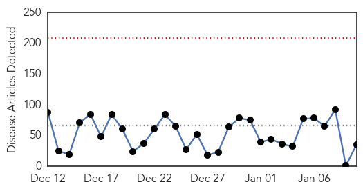
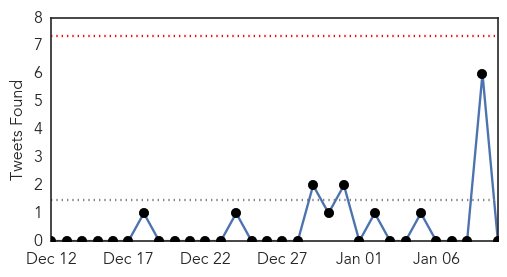
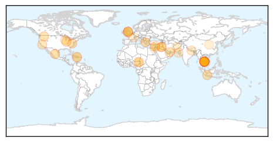
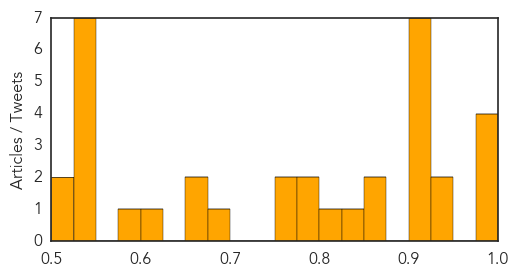
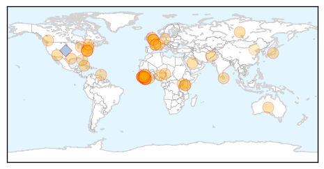
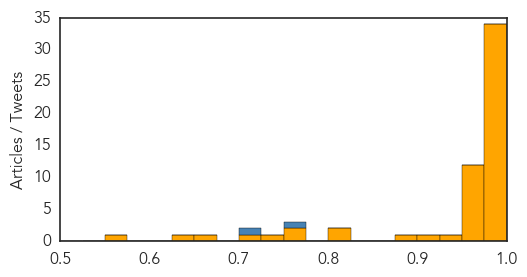

Unknown
30-Day Web Trend
0 alerts, 0 warnings

30-Day Twitter Trend
0 alerts, 0 warnings

Article Locations

Article Confidences
Top Articles:
- 0.996
- As flu becomes more widespread, CDC pushes antiviral meds
- 0.994
- NM reports five deaths from flu so far this season
- 0.989
- CDC director warns of worst Flu season this year
- 0.988
- CDC Recommending Antivirals As Flu Is Widespread Across Most of the US
- 0.932
- Health officials issue warning amid flu deaths
- 0.929
- Cambodia finds 212 with HIV where unlicensed medic operated
- 0.925
- Cambodian medic charged with murder in HIV infections
- 0.920
- 26-year-old dies of flu complications in Kenosha County
- 0.920
- Contaminated medical equipment most likely cause of Cambodian HIV outbreak
- 0.920
- Purdue researchers discover potential treatment for enterovirus D68
- 0.917
- Chicago Tribune
- 0.917
- Chicago Tribune
- 0.907
- Flu virus spikes in Virginia, at widespread level for weeks
- 0.866
- Double suicide attack on Lebanese cafe kills seven-news agency
- 0.866
- Blast in market of Nigeria's Maiduguri kills at least 12
- 0.832
- 212 Cambodians infected in HIV outbreak
- 0.805
- 212 Cambodian villagers infected with HIV virus
- 0.791
- Listeria outbreak: Two strains found at Bidart Bros. apple processing plant
- 0.790
- Unlicensed Medic Charged With Murder for Spreading HIV
- 0.775
- UK clinic prepared for increase in flu when students return
- 0.755
- Haitians Turn To Voodoo Priests Following 2010 Earthquake
- 0.689
- Cambodia HIV outbreak linked to contaminated equipment: WHO/MOH
- 0.662
- Govt adds health posts, workers
- 0.658
- 600 vacant posts of doctors make many JPMC depts non-functional
- 0.600
- Voodoo priests, doctors on frontline of Haiti's mental healthcare
- 0.594
- 26-Year-Old Dies of Flu Complications in Wisconsin
- 0.549
- Massive rallies across France in memory of terrorist victims
- 0.549
- US prosecutors ‘recommend’ charges against Petraeus
- 0.549
- France ponders security lapses after three-day terror spree
- 0.549
- Kosher grocery hostage-taker’s accomplice 'left France'
- 0.549
- France hosts international terrorism talks in wake of attacks
- 0.549
- Slain officer’s family warns against viewing all Muslims as extremists
- 0.549
- Child suicide bomber sets off deadly explosion in Nigeria
- 0.516
- China tightens wildlife protection after panda deaths
- 0.501
- Here's What British Doctors Think Are The Biggest Problems Facing A&E
Top Tweets:
-
No tweets found for Jan 10, 2015
Ebola
30-Day Web Trend
0 alerts, 0 warnings

30-Day Twitter Trend
0 alerts, 0 warnings

Article Locations
Article Confidences
Top Articles:
- 1.000
- Ebola: How Quickly We Forget
- 1.000
- Two Ebola Vaccines to Be Tested in Ravaged Countries
- 0.999
- Ending Ebola in 2015 depends on locals as much as foreign aid
- 0.999
- Ending Ebola in 15 depends on locals as much as foreign aid
- 0.999
- Sierra Leone better positioned now to fight Ebola
- 0.999
- Over 40,000 Africans to join Ebola battle: The numbers so far...and why hope whispers are louder
- 0.998
- Sierra Leone declares first Ebola-free district
- 0.998
- Sierra Leone in better position today, new UN Eloba mission chief says
- 0.998
- Sierra Leone better positioned now to fight Ebola
- 0.998
- Sierra Leone better positioned now to fight Ebola
- 0.997
- 'That 7,905 people have died of Ebola, but during the same period 750,000 children under five died from diarrheal disease'
- 0.997
- Tests rule out Ebola in L.A. patient, officials say
- 0.997
- Ebbing of Ebola complicates testing of vaccines
- 0.994
- 2 leading Ebola vaccines appear safe, further tests starting
- 0.992
- Medical charity MSF opens Ebola clinic for pregnant women
- 0.991
- A health worker under scanner for Ebola in Michigan
- 0.991
- UK leads promising Ebola vaccine trial
- 0.990
- No Ebola cases registered in Saudi ArabiaHealthcare
- 0.988
- Further testing of two Ebola vaccines likely to begin soon
- 0.988
- Further testing of two Ebola vaccines likely to begin soon
- 0.988
- Further testing of two Ebola vaccines likely to begin soon
- 0.988
- Further testing of two Ebola vaccines likely to begin soon
- 0.988
- Further testing of two Ebola vaccines likely to begin soon
- 0.988
- Further testing of two Ebola vaccines likely to begin soon
- 0.988
- Ebola charity: 'We are confident about safety measures'
- 0.987
- Kenya : President Uhuru Kenyatta praises health workers’ bravery to help combat Ebola
- 0.980
- Restaurant review: KOI at The Collection, St Regis Saadiyat Island Resort
- 0.980
- France worried over new terror attacks, hunts at-large suspect
- 0.980
- Maryland bishop facing manslaughter charge is in custody
- 0.980
- Bishop faces several charges in cyclist's death
- 0.980
- Obama to propose free community college program for up to 9 million students
- 0.977
- First trials of Ebola vaccines suggest they are safe; next phase next month
- 0.977
- First trials of Ebola vaccines suggest they are safe; next phase next month
- 0.977
- Ebola communication tips for health officials
- 0.971
- Six granted reprieve from Ebola-related visa ban, allowed into Canada
- 0.963
- The reason Ebola isn’t being stopped
- 0.963
- IMF to provide new funds to help three main Ebola-hit nations
- 0.952
- Bath doctor travels to the heart of the Ebola battle in Sierra Leone but shows little fear
- 0.951
- Boko Haram kills dozens in Nigerian market bomb attack
- 0.951
- Uganda to host first aviation expo ahead of significant growth in sector
- 0.951
- Sierra Leone News: SALWACO to ntroduce Post bola strategy
- 0.951
- Sierra Leone News: Bo Ebola Task Force gets no fund from Govt. – Res. Committee Chair
- 0.951
- Sierra Leone News: IPAM worker docked for larceny
- 0.951
- Liberia: Nigeria Gives More to Fight Ebola
- 0.951
- Sierra Leone better positioned now to fight Ebola: UN
- 0.951
- RAID, Inc. Launches New Website
- 0.939
- Vaccines move to Ebola frontline
- 0.923
- Côte d’Ivoire redoubles its efforts to prevent malaria - Côte d'Ivoire
- 0.897
- Back In D.C. From The Ebola Hot Zone, I Broke Out In A Fever
- 0.819
- Liberia Ebola Situation Report no. 68 - 7 January 2015 - Liberia
Showing top 50 articles...
Top Tweets:
- 0.771
- Spatiotemporal spread of 2014 outbreak of Ebola virus in Liberia & effectiveness of non-pharmaceutical interventions http://t.co/6Uihr7Ff2E
- 0.702
- Not to say that more couldn't have been done in Haiti but Ebola has a lot of spreading potential too.